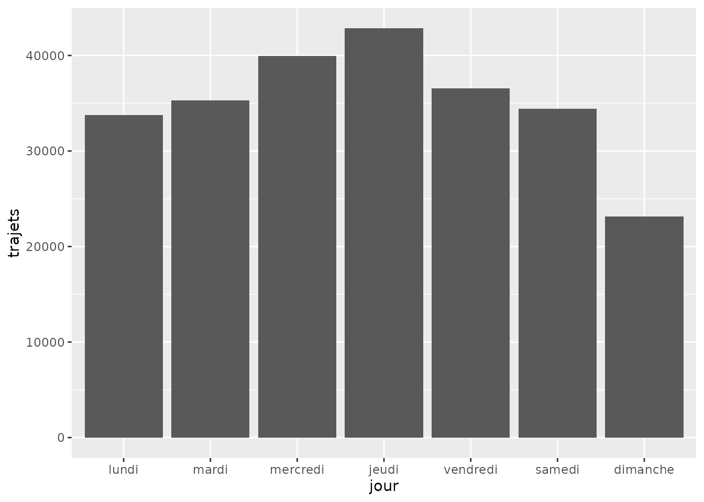

Analyse des vélos
vignette-analyse-velo.RmdIntroduction
Ce guide présente l’utilisation du package
firstlib.lomane pour analyser les données de comptage de
vélos à Nantes durant les vacances de la Toussaint.
library(firstlib.lomane)
library(ggplot2)
data("df_velo")Étape 1 : Filtrer les données
Nous allons isoler les données pour les boucles de comptage 880 et 881.
# Utilisation de la fonction du package
donnees_nantes <- firstlib.lomane::filtrer_trajet(df_velo, boucle = c("880", "881"))
# Aperçu des données
head(donnees_nantes)
#> # A tibble: 6 × 32
#> `Numéro de boucle` Jour `00` `01` `02` `03` `04` `05` `06` `07`
#> <dbl> <date> <dbl> <dbl> <dbl> <dbl> <dbl> <dbl> <dbl> <dbl>
#> 1 880 2025-11-02 30 27 14 11 5 3 4 4
#> 2 881 2025-11-02 14 23 3 1 3 1 9 9
#> 3 881 2025-11-01 28 19 17 6 3 5 5 14
#> 4 880 2025-11-01 45 29 19 13 11 5 10 4
#> 5 880 2025-10-31 30 13 8 12 7 7 22 66
#> 6 881 2025-10-31 18 7 3 3 2 5 21 57
#> # ℹ 22 more variables: `08` <dbl>, `09` <dbl>, `10` <dbl>, `11` <dbl>,
#> # `12` <dbl>, `13` <dbl>, `14` <dbl>, `15` <dbl>, `16` <dbl>, `17` <dbl>,
#> # `18` <dbl>, `19` <dbl>, `20` <dbl>, `21` <dbl>, `22` <dbl>, `23` <dbl>,
#> # Total <dbl>, `Probabilité de présence d'anomalies` <chr>,
#> # `Jour de la semaine` <dbl>, `Boucle de comptage` <chr>,
#> # `Date formatée` <date>, Vacances <chr>Étape 2 : Visualisation avec ggplot2
Le package propose une fonction clé en main pour visualiser la
distribution hebdomadaire. Elle utilise ggplot2 pour
générer un graphique clair des passages.
# Utilisation de la fonction intégrée
firstlib.lomane::plot_distribution_semaine(donnees_nantes)